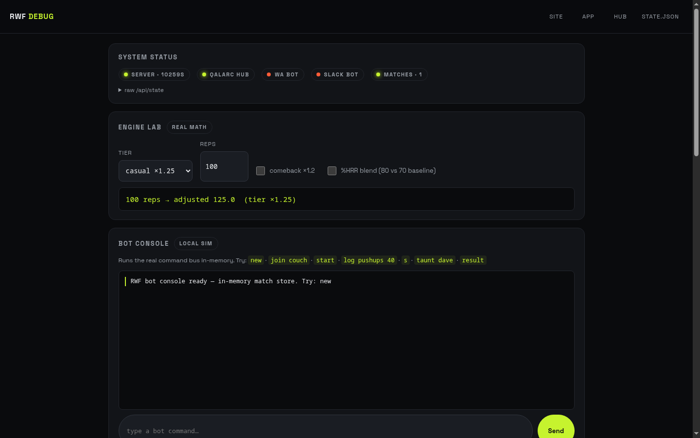
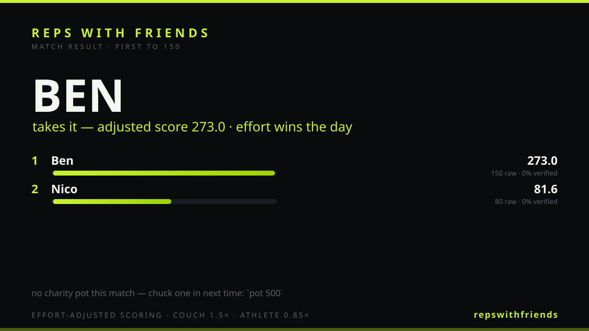

Chapter 3 · the bots
The whole game is playable inside a group chat. A platform-agnostic CommandBus (packages/bot-core/src/bus.ts) takes plain text in and returns WhatsApp/Slack-compatible text cards out — all game logic lives in the engine, so the bots are a thin parse → mutate store → format layer. The identical command surface runs on WhatsApp (via the local Qalarc Hub) and Slack (Bolt Socket Mode).
SOT bots are in flight — a dedicated agent is porting the grammar to the Engine V4 daily model; the spec'd surface is documented below the running one. The commands currently live in CI are the 300-era grammar the v1–v3 products speak.
WhatsApp group ──▶ Qalarc Hub (localhost:8769) ──▶ apps/bot-whatsapp/main.ts ─┐
├─▶ CommandBus.handle()
Slack channel ───▶ Slack Bolt (Socket Mode) ────▶ apps/bot-slack/app.ts ─────┘ │
▼
parse() → normalise token → alias map
▼
MatchStore (.data/bot-matches.json, one match per chatId)
▼
game-core engine (logReps · standings · comeback …)
▼
cards.ts → text card (mrkdwn, renders on both platforms)
card-image.ts → 1200×675 SVG result card → /cards/<name>.svg
Every command is pure input→output: handle() never throws (errors come back as cards), runs synchronously with canned taunts, and handleAsync() upgrades taunt and digest to AI-generated lines via the local AI endpoint with a 2s timeout and canned fallback.
15 commands, identical on both platforms. Optional rwf / /rwf prefix for group-mention style. Aliases: s→standings · h→help · again/runitback→rematch · nem→nemesis · monday→digest.
| Command | What it does | Mechanics underneath |
|---|---|---|
| new [target] | Create a match (default 300) | createMatch → status open, play days + exercise list announced |
| join [tier] | Join with couch/casual/fit/athlete | Sets your ×1.5/×1.25/×1.0/×0.85 multiplier |
| start | Lock the roster, go live | status → live, logging opens |
| log <ex> <reps>[!] | Log reps; trailing ! = camera-verified | Chains applyComeback → entry with verified flag; closure check |
| s | Standings with medal bars | standings() + ⚡ comeback markers + 👁 spectator count |
| taunt <name> | AI-generated cheek (canned fallback) | handleAsync → local AI endpoint, 2s timeout |
| pot <cents> | Chip into the charity pot | contribute() — "$5.00 banked. Winner picks where it goes." |
| result | Final card + shareable image | finalStandings() + closure bonus; writes the SVG card |
| rematch | Run it back after a finish | Same roster/rules, fresh pot — mirrors the app's one-tap rematch |
| nemesis [name] | Who's got your number | Head-to-head record scan across stored matches |
| digest | Monday recap card | Matches, margins, MVPs, pot, rivalry callout, AI one-liner |
| link <code> | Bind this chat to a crew | Same CREW-XXXX code the app's waiting room shows |
| watch <code> | Spectate another crew | Read-only standings of the watched crew in your chat |
| challenge <code> | Crew-vs-crew challenge | challenge accept locks it in |
| season new / ladder | Run a season, climb the ladder | 3/2/1 points + MVP, A/B divisions (see Game Rules) |
helpCard() · grammar in bus.ts COMMANDS / ALIASES / parse()The Engine V4 port of the command surface, built as SotCommandBus — parallel to the legacy bus, zero shared state, so the 300-era bots above stay untouched and green while this lands (work was uncommitted when this page was written; the grammar below is read from the code + its test suite).
| Command | What it does (daily model) | Engine call underneath |
|---|---|---|
| new [target] | Create the group + weekly season — defaults: 200 adjusted, Mon–Fri battle days, tier handicap; the card prints the tier→physical-target table (couch 134 / casual 160 / fit 200 / athlete 236) | season scaffold on the shared engine |
| join [tier] | Join / re-tier between days — physical-target card per joiner; mid-day joins held for the next day (engine days snapshot their roster) | roster + tier multiplier |
| start | Open today's battle — ≥2 players, play-day check, deadline next 21:00; deals the prototype power-up kit (one canon card each per day) | createDay |
| log <ex> <reps>[!] | Log a set — reply = banked reps + remaining + position; first-to-target fires the DAILY WIN card ("the battle continues — bank your day"), later completions get the banked-day card with streak projection | logSet |
| s | Per-player target status (🏆 WON / 🏦 BANKED / % / failing-if-it-holds) + season points + streaks | day standings + season record |
| day close | The recap — winner, banked, failed, shielded, streaks (refuses before the deadline; force is ops-only). Days also auto-close at the deadline, recap prepended to the next reply | closeDay → dayRecordFrom → recordBattleDay |
| season [ladder|end] | Weekly standings 1:1 (1 Daily Win = 1 point); end locks the season + resolves the stake | battleStandings / endBattleSeason |
| stake <type> <terms> · agree · decline · stake done | Full stake lifecycle — dinner/dare/deliverable/charity, agreement-gated (active only when ALL accept, decline voids), resolves at season end; fulfilment noted | stake lifecycle on the engine |
| pot <points> · charity <name> · donate | Charity contributions in POINTS (trial currency), sealed until the stake is active; the winner directs the pot, donation minus the disclosed fee | charity stake calls |
| lightning · steal @name · shield · freeze · bomb @name · rope @name · cards | SOT canon: ×3/10min · pure gain ("you GAIN X, they keep theirs", does not count toward target) · group streak protection consumed at the close it saves · +30min group-wide · +20/10min with defusal bonus · 50-credit to an inactive mate · the hand | activatePowerUp per canon semantics |
| help | The grammar in SOT language: reps, Daily Win, bank your day | — |
Push (not pull) — the SOT §1.3 list the chat layer must deliver unprompted: rep and milestone updates · lead changes · power-up activations · final-hour warnings · winner and season announcements · invitations and deep links · status requests · challenges and reactions · direct rep logging where the platform API permits.
Simulate it now: both bots carry a --sot sim flag (bun apps/bot-whatsapp/main.ts --sim --sot, same for Slack) — a fake clock walks the founder's demo in seconds: create → joins → stake agreements → the race → Daily Win → bank → auto-close recap → ladder → pots → a full day-2 power-up pass.
Captured from the live /debug simulator (same CommandBus the real bots run) — a couch player steals one back from an athlete. Watch the comeback fire, the closure land, and the adjusted-score upset resolve.
Ben: new 150 🏋️ *Match created — first to 150 reps* Exercises: Push-ups, Squats, Sit-ups, Burpees, Lunges Play days: Tue · Thu Ben: join couch Nico: join athlete ✅ *Ben* in as *couch* (1 playing) ✅ *Nico* in as *athlete* (2 playing) Tier matters — couch reps are worth 1.5×, athlete reps 0.85×. Effort wins. Ben: start 🚀 *LIVE — first to 150 raw reps closes it* Ben: log pushups 40 💪 *Ben* logs 40 Push-ups Nico: log squats 80 💪 *Nico* logs 80 Squats ⚡ comeback ×1.2 applied — never out of it. ← Ben is 50% behind → eligible Ben: s 🏋️ *Standings* (LIVE) 🥇 *Nico* █████░░░░░ 53.3% raw 80 · *adjusted 81.6* · 0% verified 🥈 *Ben*⚡ ███░░░░░░░ 26.7% raw 40 · *adjusted 60* · 0% verified Ben: log pushups 110 🔥 *Ben* logs 110 Push-ups — *THAT'S 150! MATCH CLOSED* 🏁 ⚡ comeback ×1.2 applied — never out of it. Ben: result 🏁 *MATCH RESULT* 🏆 *Ben* takes it — adjusted score *273* 1. Ben — 273 (150 raw) ← 60 + 110×1.5×1.2 (=198) + 15 closure 2. Nico — 81.6 (80 raw) 🖼 Result card: …/cards/m-wiki-txt-….svg
The same walkthrough is replayable any time at /debug — the console feeds the real bus through /api/sim.
/api/sim (isolated scratch store .data/sim-debug.json) · apps/figma-app/bots-sim.mjs (scripted replay + hub check)
What. The /debug page is a chat-shaped console into the real CommandBus: type commands as any player, watch the cards come back, and the generated result card SVG appears inline. This screenshot was taken mid-match with three tiers playing and a $10.00 pot banked.
How it works. Posts to /api/sim which runs simBus.handle() — one bus, one scratch store, overridable chatId so automated runs never collide with the console's session. The page doubles as the element gallery for design review.
Every finished match can be shared as a 1200×675 branded image — SVG generated server-side by the bots, PNG export from the app.

How it works. card-image.ts renders the final standings, scores and match name into an SVG, writes it to .data/cards/, and the bots link it (serve.ts serves /cards/*). The link in the transcript above produced exactly this file. Photo finishes (margin ≤ 5%) get a dramatic coral variant; the app exports PNG for social.
These are the "G-family" second wave — first four shipped 27 Aug (docs/17).
Status honestly: the bots are demo-reliable, not production-always-on. They run while the dev machine (superlocal) is up; heartbeats appear in the hub console (45s freshness window). WhatsApp flows through the local Qalarc Hub session; Slack needs its 5-minute app creation (blocker T1). Moving both to the always-on minirig is one SSH command away (blocker T3) — see Status & Roadmap.